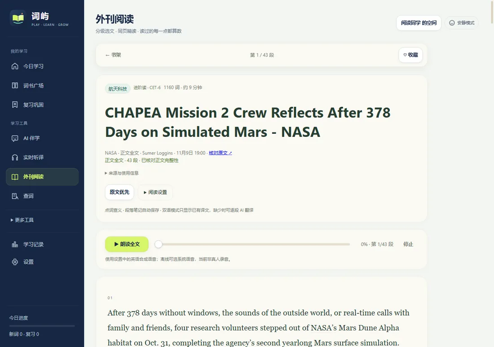
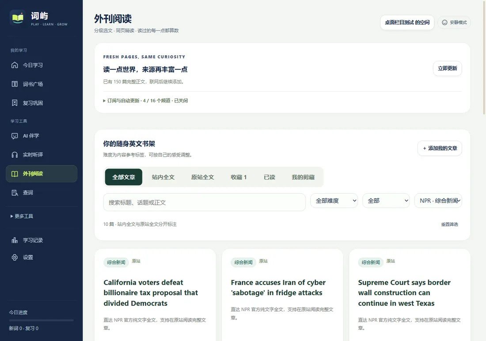
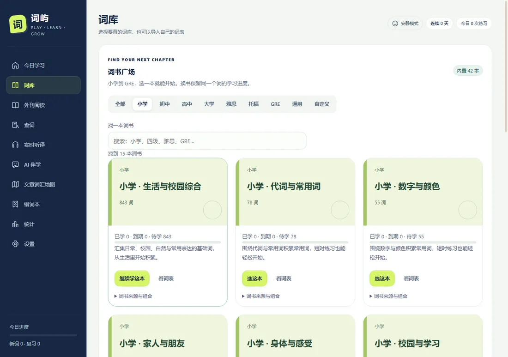

软件内直接读全文 3.9.35 新增
ScienceDaily、NPR、Smithsonian、Science News Explores 等来源的文章，点「阅读全文」就在词屿自己的窗口里打开官方完整页面：后退、前进、重新加载、原版页面与文字缩放都在。
离线优先 · 站内读全文 · v3.9.35 体验版
词屿是一款离线可用的英语学习桌面应用：42 本词书、65,000 词本地词典、16 个外刊来源与 150 篇官方全文，文章可以直接在软件里读完。本机账号加密保存学习记录，本地 AI 伴学与离线翻译随包运行，不把资料发到外部服务。

为什么是词屿
不追求花哨的排行榜，只把「今天该复习哪几个词」和「这篇外刊怎么读完」做顺。
ScienceDaily、NPR、Smithsonian、Science News Explores 等来源的文章，点「阅读全文」就在词屿自己的窗口里打开官方完整页面：后退、前进、重新加载、原版页面与文字缩放都在。
8 家媒体与机构、16 个订阅频道；150 篇经完整性校验的官方正文，从原网页正文区域提取到最后一段，支持点词查义、段落笔记、收藏与离线阅读。
随包 Qwen3-1.7B 讲词、讲段、解析听力，Hy-MT2-1.8B 做离线翻译；Windows x64 CPU 推理，不需要 Ollama / Python / CUDA。也可以改用在线 API 模式。
小学、初高中、四六级、考研、雅思、托福、GRE 与牛津 / 柯林斯词表分册，74,278 条收录、16,521 个去重词形；SM-2 间隔复习，只复习该复习的词。
输入即查，中英互查；音标、词性、释义与例句离线可用，遇到生词一键收进「查词生词」词库。
注册即得 WI- 开头的本机 ID，学习进度、笔记与资料按账号加密保存；支持记住密码 / 自动登录、锁定、恢复密钥与 .wiaccount 加密备份。不上传账号服务器。
翻卡、四选一、例句填空、拼写、听写；五词小循环按「认识它 → 换个方式想起 → 独立写出来」推进，错词本可直接针对性补练。
单词用有道美音/英音，整句用微软在线神经语音或百度翻译，断网回退系统语音；朗读高亮逐词跟随且不再遮挡段首。答题提示为约 0.7 秒的柔和琴音，可关。
界面





v3.9.35 体验版 · x64 · 293 MB
点击此处下载主包解压后双击 WordIsle.exe 即可运行，无需安装。首次打开会进入注册 / 登录，学习记录按本机账号加密保存。可执行文件没有 CA 代码签名，SmartScreen 可能提示「未知发布者」：点「更多信息 → 仍要运行」。
按需下载，合并进主包同名目录
Qwen3-1.7B 伴学包 · 1.22 GB Hy-MT2 离线翻译包 · 1.08 GB解压出的 resources/app/app/models/ 合并进主包同路径即可；不下载也能正常背词、查词、阅读，只是本地 AI 伴学与离线翻译会提示模型缺失，也可以在设置里改用在线 API。
Apple 芯片 / Intel · 需在 macOS 上打包
查看说明macOS 包必须在 Mac 上构建（Apple 工具链限制）。项目已带一键构建脚本与 GitHub Actions 工作流，拿到 Mac 或云端即可生成 DMG。
%APPDATA%\WordIsle-Contest-Preview，与旧的 3.9.x 安装版互不影响；可在设置里导出 / 导入加密备份。常见问题
目前个人使用免费。商业使用或二次分发请联系站点邮箱说明用途；源码许可见仓库的 LICENSE。
跳到 GitHub Releases 的最新主包直链（releases/latest/download/WordIsle-3.9.35-preview-win-x64.zip）。如果浏览器拦截了跳转，也可以直接打开 Releases 页面 手动下载主包或模型包。
下载对应模型包，解压后得到 resources/app/app/models/，把它合并进主包的同名目录（提示覆盖时选择「合并」）。重新打开 WordIsle.exe 即可在设置里看到模型可用。模型是 Apache-2.0 许可的公开权重，软件只做推理，不微调权重。
竞赛体验版使用独立数据目录 %APPDATA%\WordIsle-Contest-Preview，默认不读写旧版的学习记录。需要迁移时，可在注册时勾选迁入旧版本机记录，或先在旧版「设置 → 导出学习 JSON」再导入。
核心功能（词书、查词、全文阅读、练习、复习）完全离线，本地 AI 也在本机推理。在线朗读、外刊更新与「原站全文」需要网络；断网时朗读回退系统语音，已缓存的正文照常可读。
不会。注册的是本机账号，学习进度、生词本、笔记与设置加密保存在本机，不上传账号服务器、不自动跨设备同步。本地 AI 推理不外发资料；只有主动选择在线 API 模式时才按界面中的发送确认发出。
可执行文件没有购买 CA 代码签名证书。选择「更多信息 → 仍要运行」即可；要彻底消除提示需要购买 OV/EV 代码签名证书。
源代码已适配 macOS（双架构、标准菜单、DMG 配置），但安装包必须在 Mac 上构建。项目里提供了 build-macos.sh 与 GitHub Actions 工作流，可自行生成 DMG。
可以。设置里支持导入 CSV（单词,音标,词性,释义,例句,翻译）或本应用导出的 JSON 备份；也可以把查词时收藏的词当普通词库练习。
当前不接入任何统计或广告脚本。如果之后启用隐私友好的访问统计，会在本页说明。
许可与致谢
词库释义与语料来自开源项目与公共领域作品；不是牛津词典原文。